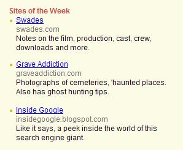

Although Grave Addiction is just a hobby I do for fun, it has received some attention from the media. It has even received a few awards. Here is the list of places that have mentioned the site or given it awards:
On September 26, 2012 an article titled "Somerset lady with some very grave interests" by Gary Wilson was published about Grave Addiction in the Perry County Tribune. The article was all about the website, and Gary said some very nice things about it. I was honored that Mr. Wilson thought my hobby was interesting enough for an article!
On September 28, 2011 an article titled "Monumental Memories...Bethel Cemetery of interest to historians" by Gary Wilson was published about the Bethel Church Cemetery in the Perry County Tribune. The article shared history about the church that was being demolished. It also talked about the cemetery. Grave Addiction was mentioned in the article, and some of the photos from the site were used. It was such a wonderful article!
On July 3, 2011 an article titled "Aficionado really digs graves - stones, that is" by Joe Blundo was published about Beth in the Columbus Dispatch. The article was all about her gravestone hobby, including her involvement with the Association for Gravestone Studies. The website was mentioned too. It really was a terrific article, and I was honored that Mr. Blundo thought my hobby was interesting enough for an article.
On October 2, 2010 Grave Addiction was mentioned and I was quoted in an article about Fort Amanda in the Wapakoneta Daily News. The article contained history about Fort Amanda, and also discussed the ghostly legends associated with it. I was honored that the site was mentioned, and that I was quoted in this article.
On May 29, 2010 Grave Addiction was mentioned and I was quoted in an article titled "Cemeteries tell tales for those who pause" by Sue Story Truax in the Omaha World-Herald. The article contained information about gravestones and symbolism. I was honored that the site was mentioned, and that I was quoted in this terrific article.
In October 2009 Grave Addiction was chosen as the ExploreOhio site of the month. I was very honored to have my site featured on their terrific site!
In May 2009 Grave Addiction received the One Lovely Blog Award from the Graveyard Rabbit of Sandusky Bay. I was very honored to receive this award from such a fantastic site!
On March 25, 2008 Grave Addiction was mentioned in the Tiffin Advertiser-Tribune newspaper. The article was about a ghost hunting presentation I did at the Clyde Public Library with the Buckeye State Paranormal and Haunting Investigators. I was excited to see that the site was mentioned!

On February 26, 2008 Grave Addiction was mentioned and I was quoted in a New York Daily News article. The article by Mehrnoosh Torbatnejad was titled Cemetery has a mob of mafiosi, and it was about the high number of mobsters buried at Saint John's Catholic Cemetery in New York. I was excited to see that the site was mentioned, and I was glad I was able to provide some information for the article!
In February 2008 Grave Addiction received the 2008 Award of Excellence from the Buckeye State Paranormal and Haunting Investigators group. BSPHI is a terrific group that I have had the pleasure to investigate with several times, and I am honored that they chose my site to receive one of their awards.
In January 2008 Grave Addiction was mentioned in Epitaphs Magazine...I was chosen as honorable mention for the 2007 "Taphophile of the Year" contest! Minda wrote a very nice article about me (and the site). I am very grateful for being nominated :)
On October 24, 2007 Grave Addiction was mentioned in an article about Ohio cemeteries with interesting names, written by Christopher Borrelli of the Toledo Blade. I was honored that the site was mentioned, and that he quoted me in his terrific article.
On December 12, 2006 Grave Addiction was mentioned in an article about abandoned buildings written by Stuart Winchester of the Columbia News Service. I was honored that the site was mentioned, and that he quoted me in his fantastic article!
On October 31, 2006 Grave Addiction's page about Waverly Hills was used as an article in the Halloween Edition of Haunted Nights Magazine. I was honored that the editor thought my page about the tuberculosis sanitorium was good enough to be included in the magazine!
On October 29, 2006 Grave Addiction was mentioned in an article about local hauntings in the Marion Star. It was a fantastic article, and I was honored that I was quoted and the site was mentioned!
In October 2006 Grave Addiction was chosen as the website "Pick of the Month" on the Haunted Heartland Tours website. I was honored that they chose my site as the pick of the month for October!
In July 2006 Grave Addiction was presented with the Paranormal Website Excellence Award from the Louisville Ghost Hunters Society. I was honored that they chose my site for this award!
In June 2006 one of the photos I took at the Sugar Creek Baptist Cemetery was used in a CD booklet! The CD, called Gloryland, is a collection of early American funeral songs performed by Fret Not Gospel. I was honored that they used one of my photos!
On November 9, 2005 Grave Addiction was one of the links featured during the Zuko's Cyber Scoop segment on WCOL 92.3 FM's Woody & The Wake Up Call show.
On October 26, 2005 I met up with Mike Carpenter at WLIO, Lima's NBC affiliate station, to talk about ghost hunting. The interview was used in one of their Halloween reports!
On October 23, 2005 Grave Addiction was mentioned in an article about local hauntings in the Fairfield Towne Crier. It was an excellent article, and I was honored that the site was mentioned.
On October 23, 2005 Grave Addiction was mentioned in an article about hauntings in Perry and Muskingum counties in the Zanesville Times Recorder. I met one of the reporters while doing a presentation at the Perry County District Library, and she used my ghost hunting tips in the article.
(And I may have been misquoted a little in the article, I don't really run away screaming when I find ghosts! It was just a statement that was taken the wrong way)
On October 23, 2005 several of my photos were featured in a special Halloween Gallery in Space Junkies Magazine. I was so excited that they decided to use some of my favorite cemetery shots!
On October 20, 2005 Grave Addiction was listed as a ghost hunting resource in the Pittsburgh Tribune-Review. I was honored that the site was chosen as a link in the article!
In October 2005 Grave Addiction was honored to receive the "Freaking Scary Site" award from Horrorfind.com!
On September 12, 2005 St. Louis Cemetery No. 1 was mentioned in an article by Josh Levin on Slate, a popular online magazine. A link to my Saint Louis Cemetery No. 1 page was included in the article. There are hundreds of sites that contain photos of this cemetery, so I was honored that he chose to link to my site!
Grave Addiction was mentioned in an article about Wolfe Cemetery in the September 2005 issue of Ohio Magazine. Although the author of the article didn't say any positive things about the site, it was a GREAT article about family cemeteries. So how was the site portrayed unfavorably? The author and his relatives feel that the "lunatics" who read about the supposed haunting at the cemetery on my site are responsible for a lot of the vandalism that has happened there. Nevermind that the legend has been around longer than the Internet, and that it's mentioned on several other sites.
A big thank you to all the visitors who have written to say they appreciate the site for helping preserve history...that's its main purpose, and hopefully none of you vandalize any cemeteries you visit. I personally don't think you're lunatics :)
Grave Addiction was honored to be chosen as the winner of the Haunted Lives Golden Site award for August 2005!
On July 29, 2005 I did an interview with NBC Channel 4 here in Columbus, Ohio (my favorite station, I watch it every single night!) about the Old Franklinton Cemetery. David Wayne did a terrific story about the cemetery, and I'm honored that they chose to interview me! Hopefully the story will cause more people to take an interest in this historic cemetery.
They even added the site to their Featured Links page:
Grave Addiction was honored to receive the Ohio EVP and Paranormal Society's Paranormal Website of Excellence award in July 2005.
A link to Grave Addiction was included in the Association for Gravestone Studies e-Newsletter on March 31, 2005! I was honored to discover my link while reading through it!
On March 5, 2005 Grave Addiction was listed as a source in an article about the Beauregard-Keyes House in New Orleans, Louisiana. I was honored that they used my site as a resource to learn about the hauntings at this house!
Grave Addiction was honored to receive the Excellence Award from Beefy's House o' Fun in March 2005!

Grave Addiction was selected as "Amanda's Cool Site" in the January 5, 2005 WorldStart.com Computer Tips and Tricks newsletter. Being mentioned in this newsletter was a great thing for the site, it set the new record for the highest number of hits. Amanda gave a really good review, I really appreciate her kind words...you can click on the award above to read what she said.

Grave Addiction was selected as one of the Rediff.com sites of the week for December 12-18, 2004. I found out about the site being selected when I started receiving a ton of hits from India! I don't know how they found out about my site, but it was an honor to be a site of the week on their site!
Grave Addiction was selected as the Seven Wonders site of the weekend for December 10-12, 2004. I did not apply for this award, so it really exciting to receive this honor from them!
On October 21, 2004 Grave Addiction was mentioned in an article titled "Grave Addiction, Do You Have It?" in the Muskingum and Licking County Our Town News paper. I was so excited to find out that they used my ghost hunting tips in their article!
In October 2004 Grave Addiction was featured in the "Hot" section of the October edition of ROI Designs Magazine. I was honored to have my site mentioned in their terrific graphic arts magazine!

On April 9, 2004 M.A.J.D.A. (an excellent paranormal investigation group which I am a member of) presented the site with their "Website Excellence" award. I didn't apply for the award, so I felt extremely proud to receive it!
On October 22, 2003 Grave Addiction was mentioned in an article about the Ohio State Reformatory written by Stephanie Lynn for the OSU Lantern.
On October 23, 2003 I made a trip down to Cincinnati for a TV interview with Tom Sussi from Fox 19 News. He was doing a feature on haunted places around Cincinnati, and asked me several questions about ghost hunting. He visited some of the area's haunted places and used pieces from the interview with me to explain ghost hunting. The interview aired on October 31, 2003.
Grave Addiction was mentioned in an excellent article about Central Ohio hauntings written by Josie Rubio in the October 2003 edition of Columbus Monthly magazine. I am quoted in the Ohio State Reformatory section and in the closing paragraph.
When I was looking through my website stats on October 24, 2003 I noticed I was getting several hits from http://sotd.vianet.ca/. I clicked on the link and found out I was chosen as the Vianet Internet Solutions Site of the Day! I thought they did a really nice description of the website :)
It's just a link to my site, and not technically press, but Entercom Radio featured Grave Addiction on their 2003 Halloween Fright Guide. Entercom is one of the largest radio broadcasting companies in the nation, so I felt honored to be linked on their Fright Guide's travel section. As a result of this link, I received hits from numerous cities across the country.
My blog, which I used to host on an old website I had, was the subject of an article written by Jeb Phillips for the Columbus Dispatch. The article was printed on February 24, 2003 on the front page of the Metro section, for the weekly "Life Stories" feature. Today the blog is on a separate site, but it was hosted on this site for several months.
Where do you want to go? Select your destination: